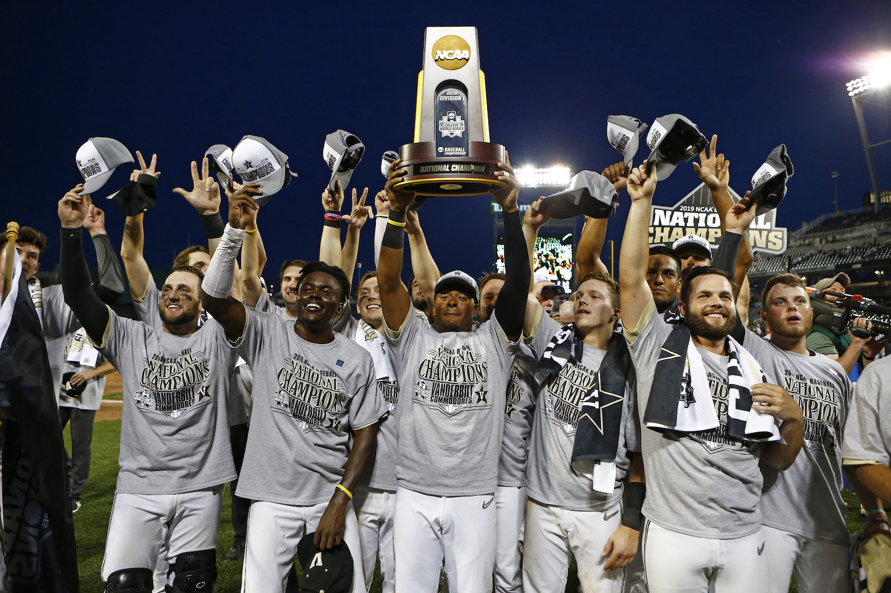

Local Team Wins Championship
The local team has won the championship after a thrilling final match that kept fans on the edge of their seats. The victory marks their first championship in over a decade, and celebrations have erupted across the city. Key players delivered outstanding performances, securing their place in sports history.
The final match was a nail-biter, with both teams demonstrating exceptional skill and determination. The game went into overtime, with the winning goal scored in the last minute. "It was an incredible moment," said the team's captain. "We’ve worked so hard for this, and it's amazing to see our efforts pay off."
Fans have been celebrating the victory with parades and parties throughout the city. "This win means so much to our community," said one fan. "We've been waiting for this for so long, and it's finally here."
The team's coach credited the win to their rigorous training regimen and strong team spirit. "Our players have shown incredible dedication and resilience," he said. "They’ve put in countless hours of hard work, and it’s paid off in the best way possible."
As the city continues to celebrate, the team's management is already looking ahead to the next season. "We want to build on this success and continue to achieve great things," said the team's manager. "This is just the beginning."
The victory has also had a significant impact on the local economy, with businesses reporting increased sales and tourism. "Championship wins like this bring a lot of positive attention to our city," said a local business owner. "It’s great for everyone."